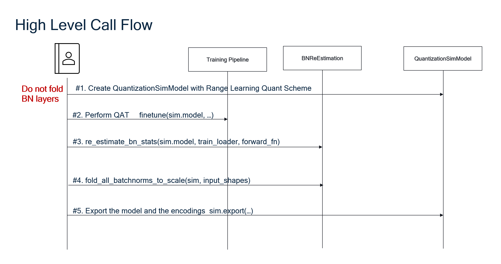

AIMET BN Re-estimation
Overview
The BN Re-estimation feature utilizes a small subset of training data to individually re-estimate the statistics of the Batch Normalization (BN) layers in a model. These BN statistics are then used to adjust the quantization scale parameters of the preceeding Convolution or Linear layers. Effectively, the BN layers are folded.
The BN Re-estimation feature is applied after performing Quantization Aware Training (QAT) with Range Learning, with Per Channel Quantization (PCQ) enabled. It is very important NOT to fold the BN layers before performing QAT. The BN layers are folded ONLY after QAT and the re-estimation of the BN statistics are completed. The Workflow section below, covers the exact sequence of steps.
The BN Re-estimation feature is specifically recommended for the following scenarios:
Low-bitwidth weight quantization (e.g., 4-bits)
Models for which Batch Norm Folding leads to decreased performance.
Models where the main issue is weight quantization (including higher bitwidth quantization)
Low bitwidth quantization of depthwise separable layers since their Batch Norm Statistics are affected by oscillations
Workflow
BN-Re-estimation requires that
BN layers not be folded before QAT.
Per Channel Quantization is enabled.
To use the BN-Re-estimation feature, the following sequence of steps must be followed in the correct order.
Create the QuantizationSimModel object with Range Learning Quant Scheme
Perform QAT with Range Learning
Re-estimate the BN statistics
Fold the BN layers
Using the QuantizationSimModel, export the model and encodings.
Once the above steps are completed, the model can be run on the target for inference.
The following high level call flow diagrams, enumerates the work flow for PyTorch. The workflow is the same for TensorFlow and Keras.
{kind=link}
BN Re-estimation API
Please refer to the links below to view the BN Re-estimation API for each AIMET variant:
BN Re-estimation for PyTorch
BN Re-estimation for Keras